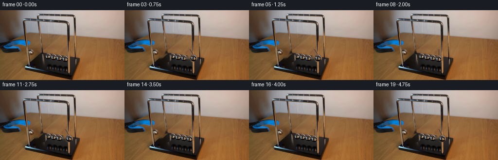
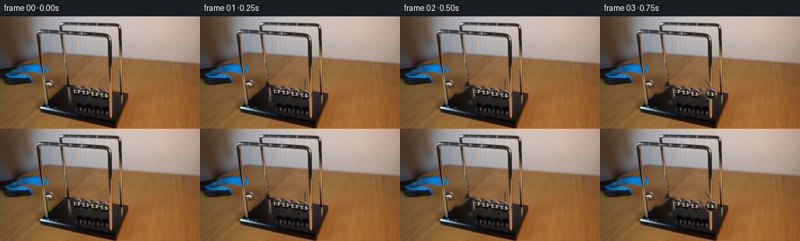

CODING AGENTS AS PIXEL WORLD MODELS
traex/DeepSeek-V4.1-Flash · 0162
点击播放 · 原生 RGB 像素
逐轮保存的候选
回放视频、检查图与代码变化。
每份候选均可单独播放。实际图片检查记录在下方工具轨迹中。
候选 01播放与检查图
点击播放 · 原生 RGB 像素


展开代码变化
--- 上一保存版本
+++ 本次保存版本
@@ -0,0 +1,190 @@
+from pathlib import Path
+
+import cv2
+import numpy as np
+from PIL import Image
+
+import artifact_io
+
+
+WIDTH = 256
+HEIGHT = 144
+FRAME_COUNT = 20
+FPS = 4
+
+
+def disk_alpha(size: int, center: float, radius: float) -> np.ndarray:
+ yy, xx = np.mgrid[:size, :size]
+ distance = np.hypot(xx - center, yy - center)
+ return np.clip(radius + 1.0 - distance, 0.0, 1.0)
+
+
+def make_sprite(
+ image: np.ndarray,
+ center: tuple[float, float],
+ radius: float,
+ padding: int = 2,
+) -> tuple[np.ndarray, np.ndarray, tuple[float, float]]:
+ size = int(np.ceil(radius * 2.0)) + padding * 2 + 1
+ local_center = (size - 1) * 0.5
+ left = int(round(center[0] - local_center))
+ top = int(round(center[1] - local_center))
+ patch = image[top : top + size, left : left + size].astype(np.float32)
+ alpha = disk_alpha(size, local_center, radius)
+ return patch, alpha, (local_center, local_center)
+
+
+def composite_sprite(
+ canvas: np.ndarray,
+ sprite: np.ndarray,
+ alpha: np.ndarray,
+ center: tuple[float, float],
+ opacity: float = 1.0,
+) -> None:
+ height, width = alpha.shape
+ x = int(round(center[0] - (width - 1) * 0.5))
+ y = int(round(center[1] - (height - 1) * 0.5))
+
+ x0 = max(0, x)
+ y0 = max(0, y)
+ x1 = min(WIDTH, x + width)
+ y1 = min(HEIGHT, y + height)
+ if x0 >= x1 or y0 >= y1:
+ return
+
+ sx0 = x0 - x
+ sy0 = y0 - y
+ sx1 = sx0 + (x1 - x0)
+ sy1 = sy0 + (y1 - y0)
+ local_alpha = (alpha[sy0:sy1, sx0:sx1] * opacity)[..., None]
+ target = canvas[y0:y1, x0:x1]
+ target[:] = (
+ sprite[sy0:sy1, sx0:sx1] * local_alpha
+ + target.astype(np.float32) * (1.0 - local_alpha)
+ )
+
+
+def draw_string(
+ canvas: np.ndarray,
+ pivot: tuple[float, float],
+ ball: tuple[float, float],
+ color: tuple[int, int, int] = (47, 42, 39),
+) -> None:
+ overlay = canvas.copy()
+ start = (int(round(pivot[0])), int(round(pivot[1])))
+ end = (int(round(ball[0])), int(round(ball[1] - 5)))
+ cv2.line(overlay, start, end, color, 1, cv2.LINE_AA)
+ cv2.addWeighted(overlay, 0.72, canvas, 0.28, 0, dst=canvas)
+
+
+def draw_soft_shadow(canvas: np.ndarray, center: tuple[float, float], strength: float) -> None:
+ if strength <= 0.0:
+ return
+ x = int(round(center[0]))
+ y = 116
+ shadow = np.zeros((HEIGHT, WIDTH), np.float32)
+ cv2.ellipse(shadow, (x, y), (8, 2), 0, 0, 360, 1.0, -1, cv2.LINE_AA)
+ shadow = cv2.GaussianBlur(shadow, (0, 0), 2.0)
+ canvas[:] = canvas.astype(np.float32) * (1.0 - shadow[..., None] * 0.12 * strength)
+
+
+def pendulum_point(
+ pivot: tuple[float, float], length: float, angle: float
+) -> tuple[float, float]:
+ return (
+ pivot[0] + length * np.sin(angle),
+ pivot[1] + length * np.cos(angle),
+ )
+
+
+def left_amplitude(cycle: int) -> float:
+ return np.deg2rad(20.0) * (0.92**cycle)
+
+
+def right_amplitude(cycle: int) -> float:
+ return np.deg2rad(35.0) * (0.90**cycle)
+
+
+def cradle_angles(t: float) -> tuple[float, float, int]:
+ cycle_length = 2.0
+ cycle = int(np.floor(t / cycle_length))
+ phase = t - cycle * cycle_length
+ left_a = left_amplitude(cycle)
+ right_a = right_amplitude(cycle)
+
+ if phase < 0.5:
+ return -left_a * np.cos(np.pi * phase), 0.0, cycle
+ if phase < 1.5:
+ return 0.0, right_a * np.sin(np.pi * (phase - 0.5)), cycle
+ return -left_a * np.sin(np.pi * (phase - 1.5)), 0.0, cycle
+
+
+def build_clean_plate(first: np.ndarray) -> np.ndarray:
+ mask = np.zeros((HEIGHT, WIDTH), np.uint8)
+
+ # The leftmost ball is the one held by the grabber.
+ cv2.circle(mask, (81, 97), 9, 255, -1, cv2.LINE_AA)
+ cv2.line(mask, (87, 77), (82, 89), 255, 2, cv2.LINE_AA)
+
+ # The rightmost ball is the one launched by the collision.
+ cv2.circle(mask, (134, 100), 7, 255, -1, cv2.LINE_AA)
+ cv2.line(mask, (134, 78), (134, 94), 255, 1, cv2.LINE_AA)
+
+ clean = cv2.inpaint(first, mask, 3, cv2.INPAINT_TELEA)
+
+ # Preserve the fine table texture in the repaired patches.
+ noise_rng = np.random.default_rng(162)
+ texture = noise_rng.normal(0.0, 1.6, (HEIGHT, WIDTH, 1)).astype(np.float32)
+ soft_mask = cv2.GaussianBlur(mask.astype(np.float32) / 255.0, (0, 0), 1.3)
+ clean = clean.astype(np.float32) + texture * soft_mask[..., None]
+ return np.clip(clean, 0, 255).astype(np.uint8)
+
+
+def generate() -> np.ndarray:
+ case_dir = Path(__file__).resolve().parent
+ first = np.asarray(Image.open(case_dir / "first_frame.png").convert("RGB"), dtype=np.uint8)
+ if first.shape != (HEIGHT, WIDTH, 3):
+ raise ValueError(f"Unexpected first frame shape: {first.shape}")
+
+ clean = build_clean_plate(first)
+ left_sprite, left_alpha, _ = make_sprite(first, (81.0, 97.0), 8.7, padding=2)
+ right_sprite, right_alpha, _ = make_sprite(first, (134.0, 100.0), 6.8, padding=2)
+
+ left_pivot = (87.0, 79.0)
+ right_pivot = (134.0, 80.0)
+ left_length = np.hypot(81.0 - left_pivot[0], 97.0 - left_pivot[1])
+ right_length = np.hypot(134.0 - right_pivot[0], 100.0 - right_pivot[1])
+
+ frames = np.empty((FRAME_COUNT, HEIGHT, WIDTH, 3), dtype=np.uint8)
+ frames[0] = first
+
+ for index in range(1, FRAME_COUNT):
+ t = index / FPS
+ left_angle, right_angle, cycle = cradle_angles(t)
+ left_center = pendulum_point(left_pivot, left_length, left_angle)
+ right_center = pendulum_point(right_pivot, right_length, right_angle)
+
+ frame = clean.copy()
+ left_strength = 1.0 - min(1.0, abs(left_angle) / max(left_amplitude(cycle), 1e-6))
+ right_strength = abs(right_angle) / max(right_amplitude(cycle), 1e-6)
+ draw_soft_shadow(frame, left_center, left_strength)
+ draw_soft_shadow(frame, right_center, right_strength)
+
+ draw_string(frame, left_pivot, left_center)
+ draw_string(frame, right_pivot, right_center, (50, 45, 43))
+
+ composite_sprite(frame, left_sprite, left_alpha, left_center)
+ composite_sprite(frame, right_sprite, right_alpha, right_center)
+ frames[index] = np.clip(frame, 0, 255).astype(np.uint8)
+
+ return frames
+
+
+def main() -> None:
+ case_dir = Path(__file__).resolve().parent
+ frames = generate()
+ artifact_io.save(frames, case_dir)
+
+
+if __name__ == "__main__":
+ main()
可观测工具轨迹
实际执行的命令与返回图片。
命令 1exit 0
/bin/bash -c "pwd && rg --files -g '"'!*__pycache__*'"'"
命令 2exit 0
/bin/bash -c "sed -n '1,240p' prompt.txt"
命令 3exit 0
/bin/bash -c "sed -n '1,280p' GENERATION_RULES.md"
命令 4exit 0
/bin/bash -c "python - <<'PY'
from PIL import Image
import numpy as np
im=np.asarray(Image.open('first_frame.png').convert('RGB'))
print('shape',im.shape,'dtype',im.dtype,'minmax',im.min(),im.max(),'mean',im.mean(axis=(0,1)))
# quantized dominant colors
q=(im//16)*16
cols,cnt=np.unique(q.reshape(-1,3),axis=0,return_counts=True)
for i in np.argsort(cnt)[-25:][::-1]: print(tuple(cols[i]),cnt[i],round(cnt[i]/im.shape[0]/im.shape[1],4))
PY"命令 5exit 0
/bin/bash -c "sed -n '1,240p' artifact_io.py && sed -n '1,240p' player_template.html"
命令 6exit 0
/bin/bash -c "python - <<'PY'
try:
import cv2; print('cv2',cv2.__version__)
except Exception as e: print('no cv2',e)
try:
import scipy; print('scipy',scipy.__version__)
except Exception as e: print('no scipy',e)
PY"命令 7exit 0
/bin/bash -c "python - <<'PY'
import cv2, numpy as np
im=cv2.imread('first_frame.png')
g=cv2.cvtColor(im,cv2.COLOR_BGR2GRAY)
for p2 in (10,15,20,25,30):
c=cv2.HoughCircles(g,cv2.HOUGH_GRADIENT,dp=1,minDist=8,param1=80,param2=p2,minRadius=3,maxRadius=20)
print('p2',p2, None if c is None else np.round(c[0],1).tolist())
PY"命令 8exit 0
/bin/bash -c "python - <<'PY'
from PIL import Image
import numpy as np
im=np.asarray(Image.open('first_frame.png').convert('RGB'))
# grayscale downsample 2x2 median; print with 1 char each, crop all
chars=' .:-=+*#%@'
g=np.mean(im,2)
g=g.reshape(72,2,128,2).mean((1,3))
for y in range(72):
print(f'{y*2:3d} '+''.join(chars[min(9,int(v/25.6))] for v in g[y]))
PY"命令 9exit 0
/bin/bash -c "python - <<'PY'
from PIL import Image
import numpy as np
im=np.asarray(Image.open('first_frame.png').convert('RGB')).astype(float)
# classify RGB pixels
def ch(p):
r,g,b=p
mx=max(p); mn=min(p); sat=mx-mn
if mx<30:return ' '
if b>r*1.35 and b>g*1.15:return 'B' if mx>90 else 'b'
if sat<15:
if mx<65:return '.'
if mx<110:return ':'
if mx<150:return 'o'
if mx<195:return 'O'
return '#'
if r>g*1.25 and g>b*1.15:
if mx<80:return ','
if mx<130:return 'w'
if mx<180:return 'W'
return '@'
if r>g*1.2:return 'R'
return '?'
for y in range(85,132):
print(f'{y:3d} '+''.join(ch(im[y,x]) for x in range(55,180)))
PY"命令 10exit 0
/bin/bash -c "python - <<'PY'
from PIL import Image
im=Image.open('first_frame.png')
for name,box in [('cradle',(55,75,180,135)),('wide',(0,0,256,144)),('balls',(65,78,145,122))]:
im.crop(box).resize(((box[2]-box[0])*5,(box[3]-box[1])*5),Image.Resampling.NEAREST).save('.tmp/'+name+'.png')
PY"命令 11exit 0
/bin/bash -c "python - <<'PY'
from PIL import Image
import numpy as np
im=np.asarray(Image.open('first_frame.png').convert('RGB'))
# colors of selected regions and edge/line info
for name,(x1,y1,x2,y2) in {'top':(55,80,175,100),'balls':(70,85,140,120),'table':(0,120,256,144),'grab':(55,105,110,130)}.items():
a=im[y1:y2,x1:x2]
print(name, 'mean',a.mean((0,1)).round(1),'std',a.std((0,1)).round(1))
# exact colors center positions
for x,y in [(84,94),(94,94),(104,94),(114,94),(124,94),(84,101),(94,101),(104,101),(114,101),(124,101),(70,118),(100,120)]:
print((x,y),im[y,x])
PY"命令 12exit 0
/bin/bash -c "python - <<'PY'
import cv2,numpy as np
im=cv2.imread('first_frame.png')
g=cv2.cvtColor(im,cv2.COLOR_BGR2GRAY)
# Hough lines
for th in (30,50,70):
l=cv2.HoughLinesP(cv2.Canny(g,50,120),1,np.pi/180,threshold=th,minLineLength=15,maxLineGap=3)
print('th',th)
if l is not None:
for x1,y1,x2,y2 in sorted(l[:,0],key=lambda z:z[1])[:30]:print((x1,y1,x2,y2))
PY"命令 13exit 0
/bin/bash -c "python - <<'PY'
import cv2,numpy as np
im=cv2.imread('first_frame.png')
# upscale and hough circles in cradle area
for box in [(60,75,150,125),(70,80,140,115),(55,70,160,130)]:
x1,y1,x2,y2=box;a=im[y1:y2,x1:x2]
g=cv2.cvtColor(a,cv2.COLOR_BGR2GRAY)
g=cv2.resize(g,None,fx=3,fy=3,interpolation=cv2.INTER_CUBIC)
c=cv2.HoughCircles(g,cv2.HOUGH_GRADIENT,dp=1,minDist=20,param1=80,param2=18,minRadius=10,maxRadius=65)
print('box',box)
if c is not None:
for x,y,r in np.round(c[0],1):print((round(x/3+x1,1),round(y/3+y1,1),round(r/3,1)))
PY"命令 14exit 0
/bin/bash -c "python - <<'PY'
from PIL import Image
import numpy as np
im=np.asarray(Image.open('first_frame.png').convert('RGB')).astype(float)
# classify RGB pixels
def ch(p):
r,g,b=p; mx=max(p); mn=min(p); sat=mx-mn
if mx<20:return ' '
if b>r*1.25 and b>g*1.08:return 'B' if mx>80 else 'b'
if sat<12:
if mx<55:return '.'
if mx<90:return ':'
if mx<130:return 'o'
if mx<170:return 'O'
return '#'
if r>g*1.2 and g>b*1.15:
if mx<70:return ','
if mx<110:return 'w'
if mx<150:return 'W'
return '@'
if r>g*1.2:return 'R'
return '?'
for y in range(70,135):
print(f'{y:3d} '+''.join(ch(im[y,x]) for x in range(50,160)))
PY"命令 15exit 0
/bin/bash -c "python - <<'PY'
import cv2,numpy as np
im=cv2.imread('first_frame.png');g=cv2.cvtColor(im,cv2.COLOR_BGR2GRAY)
# grid stats 4x4 on crop 60:150,75:125
for y in range(76,122,2):
vals=[]
for x in range(64,146,2):
a=g[y:y+2,x:x+2]
vals.append(f'{a.mean():3.0f}')
print(f'{y:3d}', ' '.join(vals))
PY"命令 16exit 0
/bin/bash -c "python - <<'PY'
import cv2,numpy as np
im=cv2.imread('first_frame.png');hsv=cv2.cvtColor(im,cv2.COLOR_BGR2HSV);rgb=im[:,:,::-1]
# grabber = blue-ish dark. mask B>R and B>G
m=(rgb[:,:,2]>rgb[:,:,0]+8)&(rgb[:,:,2]>rgb[:,:,1]+2)&(rgb[:,:,2]>35)
ys,xs=np.where(m)
print('blue bbox',xs.min(),ys.min(),xs.max(),ys.max(),'n',len(xs))
for y in range(100,130,2):
xs2=np.where(m[y])[0]
if len(xs2): print(y,xs2.min(),xs2.max(),len(xs2))
# visual line boundaries via saturation perhaps
PY"命令 17exit 0
/bin/bash -c "python - <<'PY'
from PIL import Image
import numpy as np
im=np.asarray(Image.open('first_frame.png').convert('RGB'))
# save quadrants upscaled? print metadata and corners
print(Image.open('first_frame.png').info)
for y,x in [(0,0),(0,255),(143,0),(143,255),(72,128),(130,20),(130,140)]:print((x,y),im[y,x])
PY"命令 18exit 0
/bin/bash -c "python - <<'PY'
import cv2,numpy as np
im=cv2.imread('first_frame.png')
g=cv2.cvtColor(im,cv2.COLOR_BGR2GRAY)
# try blob detector on dark/gray balls maybe threshold low for circular regions
for y in range(76,124,2):
row=[]
for x in range(64,150,2):
b,gc,r=im[y,x]; lum=(int(b)+int(gc)+int(r))/3
# metal = low saturation and brightness 60-190
mx=max(b,gc,r);mn=min(b,gc,r)
if mx<30: row.append(' ')
elif mx-mn<15 and 45<mx<210:row.append('M')
elif mx<80:row.append('.')
else:row.append('-')
print(f'{y:3d} '+''.join(row))
PY"命令 19exit 0
/bin/bash -c "python - <<'PY'
from PIL import Image
import numpy as np
im=np.asarray(Image.open('first_frame.png').convert('RGB'))
# print selected rows as runs of quantized 8-level rgb bins; and dark pixels
for y in range(84,124,2):
print('Y',y)
for x1,x2 in [(60,150),(100,150)]:
a=im[y,x1:x2]
# print top bright/dark coords
print(x1, 'dark',[(x1+i,int(v)) for i,v in enumerate(a.mean(1)) if v<35][:25])
PY"命令 20exit 0
/bin/bash -c "python - <<'PY'
from PIL import Image
import numpy as np
im=np.asarray(Image.open('first_frame.png').convert('RGB'))
# crop ascii RGB centroids maybe use kmeans on crop to see colors
from sklearn.cluster import KMeans
for box in [(60,78,150,122),(60,105,140,130),(90,85,145,125)]:
x1,y1,x2,y2=box;a=im[y1:y2,x1:x2].reshape(-1,3)
km=KMeans(8,random_state=0,n_init=4).fit(a)
print(box)
for c,n in sorted(zip(km.cluster_centers_,np.bincount(km.labels_)),key=lambda z:-z[1]):print(np.round(c).astype(int),n)
PY"命令 21exit 0
/bin/bash -c "python - <<'PY'
import numpy as np
from PIL import Image
im=np.asarray(Image.open('first_frame.png').convert('RGB')).astype(float)
# compute gradient maps around cradle, print top gradient pixels and coordinate colors
for name,(x1,y1,x2,y2) in [('balls',(65,82,145,125)),('grab',(55,105,140,135)),('top',(65,78,150,100))]:
a=im[y1:y2,x1:x2].mean(2); gx=np.abs(np.diff(a,axis=1));gy=np.abs(np.diff(a,axis=0));
inds=np.dstack(np.unravel_index(np.argsort((gx[:-1]+gy[:,:-1]).ravel())[-20:],gx[:-1].shape))[0]
print(name,[(int(x+x1),int(y+y1),round(float(gx[y,x]),1),round(float(gy[y,x]),1)) for y,x in inds[-10:]])
PY"命令 22exit 0
/bin/bash -c "python - <<'PY'
import numpy as np
from PIL import Image
im=np.asarray(Image.open('first_frame.png').convert('RGB')).astype(float)
# print rgb numeric 4px bins 88:145 x 78:122
for y in range(80,122,4):
print('y',y)
print(' '.join(f'{int(im[y:y+4,x:x+4,0].mean()):02x}{int(im[y:y+4,x:x+4,1].mean()):02x}{int(im[y:y+4,x:x+4,2].mean()):02x}' for x in range(68,148,4)))
PY"命令 23exit 0
/bin/bash -c "python - <<'PY'
import numpy as np
from PIL import Image
im=np.asarray(Image.open('first_frame.png').convert('RGB')).astype(float)
# vertical bands around likely ball centers, compute local color stats circles r=7
for y in range(86,108,2):
print('row',y)
for x in range(72,146,4):
a=im[y-2:y+3,x-2:x+3]
print(f'{x}:{int(a.mean()):3d}',end=' ')
print()
PY"命令 24exit 0
/bin/bash -c "python - <<'PY'
from PIL import Image
import numpy as np
im=np.asarray(Image.open('first_frame.png').convert('RGB'))
# Print colors exact 2x2 avg map with hex in central 75..145 x 82..122, categorical based chroma
for y in range(82,123):
row=''
for x in range(66,150):
r,g,b=map(int,im[y,x]); mx=max(r,g,b); mn=min(r,g,b); sat=mx-mn
if mx<18:c=' '
elif mx<34:c='.'
elif b>r+7:c='b'
elif b>g+4:c='c'
elif sat<9:
c='123456789'[min(8,(mx-34)//17)] if mx>=34 else '1'
elif r>g*1.15:c='w'
else:c='?'
row+=c
print(f'{y:3d} {row}')
PY"命令 25exit 0
/bin/bash -c "python - <<'PY'
import numpy as np
from PIL import Image
im=np.asarray(Image.open('first_frame.png').convert('RGB')).astype(float)
# local high contrast bright circular cores near cradle: report max/mean positions in 4x4 cells with chroma
for y in range(86,116,2):
vals=[]
for x in range(68,146,2):
a=im[y:y+2,x:x+2]
mx=a.mean(2).max()
# nearest neutral bright
chroma=(a.max(2)-a.min(2)).mean()
if mx>100 and chroma<45: vals.append((x,int(mx),int(chroma)))
print(y,vals)
PY"命令 26exit 0
/bin/bash -c "python - <<'PY'
from PIL import Image
import numpy as np
im=np.asarray(Image.open('first_frame.png').convert('RGB')).astype(float)
# find vertical dark line columns in x 100..150 rows 78..114, print per x median/min bright count
for x in range(100,151):
a=im[78:115,x].mean(1)
print(x, round(np.median(a)), round(np.percentile(a,25)), round(a.max()), sum(a<35))
PY"命令 27exit 0
/bin/bash -c "python - <<'PY'
from PIL import Image
import numpy as np
im=np.asarray(Image.open('first_frame.png').convert('RGB'))
# print highly saturated blue positions rows 110-128 with exact rgb and count
for y in range(108,130):
out=[]
for x in range(40,140):
r,g,b=map(int,im[y,x])
if b>r+15 and b>g+4 and b>45: out.append((x,(r,g,b)))
print(y,out)
PY"命令 28exit 0
/bin/bash -c "python - <<'PY'
import numpy as np
from PIL import Image
im=np.asarray(Image.open('first_frame.png').convert('RGB')).astype(float)
# find circles by color mask components in crop. Metal neutral bright components
for th in [50,70,90,110,130,150]:
m=(im.max(2)>th)&((im.max(2)-im.min(2))<35)
m[:75]=False;m[130:]=False;m[:,:60]=False;m[:,150:]=False
import cv2
n,l,st,cent=cv2.connectedComponentsWithStats(m.astype('uint8'))
print('th',th,[(tuple(np.round(cent[i],1)),int(st[i,4]),tuple(st[i,:4])) for i in range(1,n) if st[i,4]>=5][:30])
PY"命令 29exit 0
/bin/bash -c "python - <<'PY'
from PIL import Image
import numpy as np
im=np.asarray(Image.open('first_frame.png').convert('RGB'))
# Quantized hue map central crop; hue categories via cv2
import cv2
hsv=cv2.cvtColor(im,cv2.COLOR_RGB2HSV)
for y in range(82,120,2):
row=''
for x in range(64,148,2):
h,s,v=hsv[y:y+2,x:x+2].reshape(-1,3).mean(0)
if v<20: c=' '
elif s<35: c='.'
elif h<10:c='R'
elif h<20:c='O'
elif h<35:c='Y'
elif h<55:c='G'
elif h<95:c='C'
elif h<130:c='B'
else:c='P'
row+=c
print(f'{y:3d} {row}')
PY"命令 30exit 0
/bin/bash -c "python - <<'PY'
import cv2,numpy as np
im=cv2.imread('first_frame.png');g=cv2.cvtColor(im,cv2.COLOR_BGR2GRAY).astype(float)
for yr in [(88,115),(95,115),(100,120),(85,105)]:
print('yr',yr)
for x in range(88,146):
# vertical gradient magnitude across x averaged y, plus horizontal edges
a=g[yr[0]:yr[1],max(0,x-1):x+2]
print(f'{x}:{np.abs(np.diff(a,axis=1)).mean():.0f}',end=' ')
print()
PY"命令 31exit 0
/bin/bash -c "python - <<'PY'
from PIL import Image
import numpy as np
im=np.asarray(Image.open('first_frame.png').convert('RGB')).astype(float)
# fit circle center by edge points for each candidate ball. print edge coords on angular expected outer boundaries
# use per-pixel max gradient and list top 100 in balls area
import cv2
g=cv2.cvtColor(im.astype('uint8'),cv2.COLOR_RGB2GRAY)
a=cv2.Canny(g,40,100)
ys,xs=np.where(a[80:122,65:145]);ys+=80;xs+=65
print(len(xs))
# ascii edges
for y in range(80,122):
print(f'{y:3d} '+''.join('#' if a[y,x] else ' ' for x in range(65,145)))
PY"命令 32exit 0
/bin/bash -c "python - <<'PY'
import numpy as np
from PIL import Image
im=np.asarray(Image.open('first_frame.png').convert('RGB'))
# Print exact color runs for rows 90,94,98,102,106,110,114 with x and rgb only every 2
for y in [88,90,92,94,96,98,100,102,104,106,108,110,112,114,116]:
print('\\nY',y)
for x in range(70,146,2):
r,g,b=im[y,x]
print(f'{x}:{r:02x}{g:02x}{b:02x}',end=' ')
print()
PY"命令 33exit 0
/bin/bash -c "python - <<'PY'
import cv2,numpy as np
im=cv2.imread('first_frame.png'); g=cv2.cvtColor(im,cv2.COLOR_BGR2GRAY)
# candidate vertical lines Hough at varying thresholds
for t in [10,15,20,25,30,35,40]:
l=cv2.HoughLinesP(cv2.Canny(g,20,60),1,np.pi/180,threshold=t,minLineLength=12,maxLineGap=2)
vert=[]
if l is not None:
for x1,y1,x2,y2 in l[:,0]:
if abs(x2-x1)<=2 and max(y1,y2)>75 and min(y1,y2)<125: vert.append((x1,y1,x2,y2))
print(t,vert[:30])
PY"命令 34exit 0
/bin/bash -c "python - <<'PY'
import numpy as np
from PIL import Image
im=np.asarray(Image.open('first_frame.png').convert('RGB')).astype(float)
# object masks based on colors; print connected components of dark stuff
import cv2
r,g,b=im[:,:,0],im[:,:,1],im[:,:,2]
# dark neutral object: low sat, max<80, region
m=((im.max(2)<90)&((im.max(2)-im.min(2))<25)).astype('uint8');m[:75]=0;m[130:]=0;m[:,:55]=0;m[:,150:]=0
n,l,st,cent=cv2.connectedComponentsWithStats(m)
print([(int(st[i,4]),tuple(np.round(cent[i],1)),tuple(st[i,:4])) for i in range(1,n) if st[i,4]>5])
# blue mask comps
m=((b>r+10)&(b>g+3)&(b>35)).astype('uint8');m[:100]=0;m[130:]=0;m[:,:45]=0;m[:,140:]=0
n,l,st,cent=cv2.connectedComponentsWithStats(m)
print('blue',[(int(st[i,4]),tuple(np.round(cent[i],1)),tuple(st[i,:4])) for i in range(1,n) if st[i,4]>2])
PY"命令 35exit 0
/bin/bash -c "python - <<'PY'
import cv2,numpy as np
im=cv2.imread('first_frame.png');g=cv2.cvtColor(im,cv2.COLOR_BGR2GRAY)
# output circles overlay for viewing as png though disabled visually? inspect coordinates only
c=cv2.HoughCircles(g,cv2.HOUGH_GRADIENT,dp=.7,minDist=10,param1=50,param2=8,minRadius=4,maxRadius=12)
if c is not None:
c=np.round(c[0],1)
c=c[(c[:,1]>80)&(c[:,1]<125)&(c[:,0]>60)&(c[:,0]<150)]
print(c[np.argsort(c[:,0])])
PY"命令 36exit 0
/bin/bash -c "python - <<'PY'
from PIL import Image
import numpy as np
im=np.asarray(Image.open('first_frame.png').convert('RGB'))
# Print 16x16 local block average lum at every 8 px, central 48:160,72:136
for y in range(72,137,8):
print(f'{y:3d} '+ ' '.join(f'{im[y:y+8,x:x+8].mean():3.0f}' for x in range(48,160,8)))
PY"命令 37exit 0
/bin/bash -c "python - <<'PY'
from PIL import Image
import numpy as np
im=np.asarray(Image.open('first_frame.png').convert('RGB')).astype(float)
# circle fit candidate center via dark disk boundaries. report per row dark x extents in balls area
for y in range(84,124,2):
xs=[]
for x in range(70,146):
v=im[y,x].mean()
if v<60:xs.append(x)
# runs
runs=[]
if xs:
s=p=xs[0]
for x in xs[1:]:
if x>p+1:runs.append((s,p));s=x
p=x
runs.append((s,p))
print(y,runs)
PY"命令 38exit 0
/bin/bash -c "python - <<'PY'
import cv2,numpy as np
im=cv2.imread('first_frame.png');g=cv2.cvtColor(im,cv2.COLOR_BGR2GRAY)
# Hough circle params aimed low contrast gray balls; print x in 80..140 y 85..115
for p2 in [4,5,6,7,8,9,10,11,12]:
c=cv2.HoughCircles(g,cv2.HOUGH_GRADIENT,dp=1,minDist=12,param1=30,param2=p2,minRadius=4,maxRadius=10)
print('p2',p2,None if c is None else np.round(c[0][(c[0][:,1]>80)&(c[0][:,1]<120)&(c[0][:,0]>65)&(c[0][:,0]<145)],1).tolist())
PY"命令 39exit 0
/bin/bash -c "python - <<'PY'
from PIL import Image
import numpy as np
im=np.asarray(Image.open('first_frame.png').convert('RGB')).astype(float)
# compute saturation map block 4x4 and print at centers
sat=im.max(2)-im.min(2)
for y in range(80,124,4):
print(y,' '.join(f'{sat[y:y+4,x:x+4].mean():2.0f}' for x in range(68,148,4)))
PY"命令 40exit 0
/bin/bash -c "python - <<'PY'
from PIL import Image
import numpy as np
im=np.asarray(Image.open('first_frame.png').convert('RGB')).astype(float)
# At high-sat warm top, find vertical boundaries based hue/sat and luminance. Summaries for row ranges
for y in range(82,104):
# print block mean RGB 6px each x 72-140
print(y,' '.join(f'{im[y:y+1,x:x+3].reshape(-1,3).mean(0).astype(int)}' for x in range(72,141,6)))
PY"命令 41exit 1
/bin/bash -c 'python generate.py'
命令 42exit 0
/bin/bash -c 'python generate.py'
命令 43exit 0
/bin/bash -c "python - <<'PY'
from PIL import Image
import numpy as np, json
f=np.stack([np.asarray(Image.open(f'frames/{i:02d}.png')) for i in range(20)])
first=np.asarray(Image.open('first_frame.png').convert('RGB'))
print('shape',f.shape,'dtype',f.dtype,'frame0 identical',np.array_equal(f[0],first))
for i in range(20):
d=np.abs(f[i].astype(int)-f[max(0,i-1)].astype(int))
print(i,'mean',round(float(f[i].mean()),2),'delta',int(d.sum()),'changed',int(np.any(d>0,axis=2).sum()))
PY"命令 44exit 0
/bin/bash -c "python - <<'PY'
from PIL import Image
import numpy as np
im=np.asarray(Image.open('first_frame.png').convert('RGB')).astype(float)
chars=' .:-=+*#%@'
def show(x1,y1,x2,y2):
print(' '+''.join(str(x//10%10) for x in range(x1,x2)))
print(' '+''.join(str(x%10) for x in range(x1,x2)))
for y in range(y1,y2):
row=''
for x in range(x1,x2):
v=im[y,x].mean()
row+=chars[min(9,int(v/25.6))]
print(f'{y:3d} {row}')
print('LEFT');show(68,86,96,110)
print('CENTER');show(92,86,144,112)
PY"命令 45exit 0
/bin/bash -c "python - <<'PY'
from PIL import Image
import numpy as np
im=np.asarray(Image.open('first_frame.png').convert('RGB')).astype(float)
chars=' .:-=+*#%@'
def show(x1,y1,x2,y2):
print(' '+''.join(str(x//10%10) for x in range(x1,x2)))
print(' '+''.join(str(x%10) for x in range(x1,x2)))
for y in range(y1,y2):
row=''
for x in range(x1,x2):
v=im[y,x].mean()
row+=chars[min(9,int(v/25.6))]
print(f'{y:3d} {row}')
show(48,70,140,135)
PY"命令 46exit 0
/bin/bash -c "python - <<'PY'
from PIL import Image
import numpy as np
im=np.asarray(Image.open('first_frame.png').convert('RGB'))
chars=' .:-=+*#%@'
for y in range(76,106):
row=''
for x in range(80,142):
v=im[y,x].mean(); row+=chars[min(9,int(v/25.6))]
print(f'{y:3d} {row}')
PY"命令 47exit 0
/bin/bash -c "python - <<'PY'
import numpy as np
from PIL import Image
im=np.asarray(Image.open('first_frame.png').convert('RGB'))
# Save first frame ascii-like color-coded with image, but output SVG? prohibited visual tools; use sixel? no.
# print exact rows with x labels for high bright spots
for y in range(88,104):
xs=[]
for x in range(80,142):
if im[y,x].mean()>95:xs.append(x)
runs=[]
if xs:
s=p=xs[0]
for x in xs[1:]:
if x>p+1:runs.append((s,p));s=x
p=x
runs.append((s,p))
print(y,runs)
PY"命令 48exit 0
/bin/bash -c "python - <<'PY'
from PIL import Image
import numpy as np
im=np.asarray(Image.open('first_frame.png').convert('RGB')).astype(int)
r,g,b=im.transpose(2,0,1)
mx=im.max(2);mn=im.min(2);sat=mx-mn
# Several masks
masks={
'M':(sat<20)&(mx>55),
'N':(sat<30)&(mx>80),
'L':(sat<40)&(mx>60),
}
for y in range(78,112):
row=''
for x in range(60,145):
c=' '
if masks['M'][y,x]:c='m'
if masks['N'][y,x]:c='N'
if masks['L'][y,x] and c==' ':c='.'
row+=c
print(f'{y:3d} {row}')
PY"命令 49exit 0
/bin/bash -c "python - <<'PY'
from PIL import Image
import numpy as np
im=np.asarray(Image.open('first_frame.png').convert('RGB')).astype(float)
# local standard deviation over 5x5, show circles/edges
import cv2
g=cv2.cvtColor(im.astype('uint8'),cv2.COLOR_RGB2GRAY).astype(float)
m=cv2.blur(g,(5,5)); m2=cv2.blur(g*g,(5,5)); sd=np.sqrt(np.maximum(m2-m*m,0))
chars=' .:-=+*#%@'
for y in range(84,112):
row=''
for x in range(64,146):
v=sd[y,x]; row+=chars[min(9,int(v/6))]
print(f'{y:3d} {row}')
PY"命令 50exit 0
/bin/bash -c "python - <<'PY'
import numpy as np
from PIL import Image
im=np.asarray(Image.open('first_frame.png').convert('RGB')).astype(float)
# print chroma normalized: (r-g)/(r+g+b), g-b etc
for y in range(88,106):
row=''
for x in range(70,146):
r,g,b=im[y,x];c=(r-g)/max(r+g+b,1)
if r+g+b<70:c=' '
elif c>.30:c='R'
elif c>.24:c='O'
elif c>.18:c='Y'
elif c>.12:c='o'
elif c>.07:c='y'
else:c='.'
row+=c
print(f'{y:3d} {row}')
PY"命令 51exit 0
/bin/bash -c "python - <<'PY'
from PIL import Image
import numpy as np
im=np.asarray(Image.open('first_frame.png').convert('RGB'))
# inspect frame edges: likely render generated from photo, perhaps circles actually at x 76,96,116,136 y~95
# estimate background under ball via bilateral interpolation not useful. show colors at grid centers
for y in [90,92,94,96,98,100,102]:
print('y',y)
for x in [76,80,84,88,92,96,100,104,108,112,116,120,124,128,132,136]:
print(f'{x}:{tuple(im[y,x])}',end=' ')
print()
PY"命令 52exit 0
/bin/bash -c "python - <<'PY'
from PIL import Image
import numpy as np
im=np.asarray(Image.open('first_frame.png').convert('RGB')).astype(float)
# print luminance normalized by local horizontal median to isolate specular blobs
g=im.mean(2)
import cv2
bg=cv2.medianBlur(g.astype('uint8'),15).astype(float)
d=g-bg
chars=' .:-=+*#%@'
for y in range(86,108):
row=''
for x in range(64,146):
v=d[y,x];row+=chars[min(9,max(0,int((v+20)/12)))]
print(f'{y:3d} {row}')
PY"命令 53exit 0
/bin/bash -c "python - <<'PY'
from PIL import Image
import numpy as np
im=np.asarray(Image.open('first_frame.png').convert('RGB')).astype(float)
# for each x in 75..140, local max specular in y 88..102 and its y, background lum at y80
for x in range(70,145):
a=im[88:103,x].mean(1)
y=88+int(a.argmax())
if a.max()>95: print(x,round(a.max()),y)
PY"命令 54exit 0
/bin/bash -c "python - <<'PY'
from PIL import Image
import numpy as np
im=np.asarray(Image.open('first_frame.png').convert('RGB')).astype(float)
# determine table vs background: print edge gradient magnitude 7x7 over central
import cv2
g=cv2.cvtColor(im.astype('uint8'),cv2.COLOR_RGB2GRAY)
for t in [40,60,80,100,120]:
e=cv2.Canny(g,t,t*2)
ys,xs=np.where(e[75:140,50:160]);ys+=75;xs+=50
print(t,len(xs))
PY"命令 55exit 0
/bin/bash -c "python - <<'PY'
from PIL import Image
import numpy as np
im=np.asarray(Image.open('first_frame.png').convert('RGB'))
# Luminance local maxima grid coords in cradle area. NMS 5x5
import cv2
g=cv2.cvtColor(im,cv2.COLOR_RGB2GRAY).astype(float)
mx=cv2.dilate(g,np.ones((5,5),np.uint8))
ys,xs=np.where((g==mx)&(g>80))
p=[(int(x),int(y),int(g[y,x])) for x,y in zip(xs,ys) if 65<x<145 and 82<y<110]
print(sorted(p,key=lambda q:-q[2])[:100])
PY"命令 56exit 0
/bin/bash -c "python - <<'PY'
from PIL import Image
import numpy as np
im=np.asarray(Image.open('first_frame.png').convert('RGB')).astype(float)
# Difference from smooth background using median 31 and display sign/darkness
import cv2
g=im.mean(2)
bg=cv2.medianBlur(g.astype('uint8'),31).astype(float)
d=g-bg
chars='@%#*+=-:. '
for y in range(78,112):
row=''
for x in range(60,150):
v=d[y,x]; row+=chars[min(9,max(0,int((v+60)/12)))]
print(f'{y:3d} {row}')
PY"命令 57exit 0
/bin/bash -c "python - <<'PY'
import numpy as np
from PIL import Image
im=np.asarray(Image.open('first_frame.png').convert('RGB')).astype(float)
# print local hue / rgb values around likely balls using row y=95; smooth 3x3 averages
import cv2
for y in [92,94,96,98,100]:
print('\\nrow',y)
a=cv2.blur(im[y-1:y+2],(3,3))[1]
for x in range(78,142,2):print(f'{x}:{tuple(a[x].astype(int))}',end=' ')
print()
PY"命令 58exit 0
/bin/bash -c "python - <<'PY'
from PIL import Image
import numpy as np
im=np.asarray(Image.open('first_frame.png').convert('RGB'))
# Color cluster centers via kmeans on crop of top background excluding dark object? print map with 6 cluster labels
from sklearn.cluster import KMeans
for box in [(60,76,140,105),(60,76,140,122)]:
x1,y1,x2,y2=box;a=im[y1:y2,x1:x2].reshape(-1,3)
km=KMeans(10,random_state=1,n_init=10).fit(a)
print('box',box)
for i,c in enumerate(km.cluster_centers_): print(i,np.round(c).astype(int),np.sum(km.labels_==i))
PY"命令 59exit 0
/bin/bash -c "python - <<'PY'
from PIL import Image
import numpy as np
im=np.asarray(Image.open('first_frame.png').convert('RGB')).astype(float)
# find ball-like circle masks: dark disk with bright specular at center-ish. Search center x 70..140 y90..105 radius 5..10, score dark ring vs interior? print low average
for r in [6,7,8]:
arr=[]
for cy in range(90,106):
for cx in range(72,142):
yy,xx=np.ogrid[:144,:256]; d=np.hypot(xx-cx,yy-cy)
inside=im[d<r].mean(); ring=im[(d>=r)&(d<r+2)].mean()
# ball appears neutral dark; ring warm background. score
score=ring-inside
arr.append((score,cx,cy,inside,ring))
print('r',r,sorted(arr,reverse=True)[:15])
PY"命令 60exit 0
/bin/bash -c "python - <<'PY'
import numpy as np
from PIL import Image
im=np.asarray(Image.open('first_frame.png').convert('RGB')).astype(float)
# print average RGB in small 3x3 at candidate center coordinates
for cx,cy in [(81,97),(94,94),(102,95),(112,99),(118,98),(123,98),(126,99),(135,100),(134,103),(95,101),(100,101)]:
a=im[cy-1:cy+2,cx-1:cx+2]
print((cx,cy),a.mean((0,1)).round(0), 'max',a.mean(2).max())
PY"命令 61exit 0
/bin/bash -c "python - <<'PY'
from PIL import Image
import numpy as np
im=np.asarray(Image.open('first_frame.png').convert('RGB')).astype(float)
# find vertical strings by color local gradient in upper rows, print x gradients around 75-140 for each y 75..95
import cv2
g=cv2.cvtColor(im.astype('uint8'),cv2.COLOR_RGB2GRAY).astype(float)
gx=np.abs(np.diff(g,axis=1))
for y in range(75,96):
xs=np.argsort(gx[y,60:145])[-8:]+60
print(y,[(int(x),round(gx[y,x],0)) for x in sorted(xs)])
PY"命令 62exit 0
/bin/bash -c "python - <<'PY'
from PIL import Image
import numpy as np
im=np.asarray(Image.open('first_frame.png').convert('RGB')).astype(float)
# print luminance at likely strings x=85,139 y75..95
for x in [84,85,86,87,88,138,139,140,141,142,143]:
print('x',x,' '.join(f'{int(im[y,x].mean())}' for y in range(72,96)))
PY"命令 63exit 0
/bin/bash -c "python - <<'PY'
from PIL import Image
import numpy as np
im=np.asarray(Image.open('first_frame.png').convert('RGB'))
# display each frame crop in 2x block, frame0 and generated frames 1,3,5,7,9,11,13,15,19
for fi in [0,1,2,3,4,5,6,7,8,9,10,11,12,13,14,15,16,17,18,19]:
a=np.asarray(Image.open(f'frames/{fi:02d}.png').convert('RGB')).astype(float)
# difference from first in crop
print('frame',fi)
# grayscale 2x downsample 70:145,84:120 as 38 chars? only every 2
chars=' .:-=+*#%@'
for y in range(86,112,2):
print(''.join(chars[min(9,int(a[y:y+2,x:x+2].mean()/25.6))] for x in range(66,146,2)))
PY"命令 64exit 0
/bin/bash -c "python - <<'PY'
from PIL import Image
import numpy as np
im=np.asarray(Image.open('first_frame.png').convert('RGB')).astype(float)
# identify the likely 5 ball centers from visible circular patterns manually using local minima/centers.
# print distance from background at x=80 for y etc
for y in range(84,112):
print(y, tuple(im[y,81].astype(int)), round(im[y,81].mean(),0))
PY"命令 65exit 0
/bin/bash -c "python - <<'PY'
import cv2, numpy as np
im=cv2.imread('first_frame.png');g=cv2.cvtColor(im,cv2.COLOR_BGR2GRAY)
e=cv2.Canny(g,60,140)
# 2x2 blocks max edge
E=e.reshape(72,2,128,2).max((1,3))
for y in range(72):
print(''.join('#' if E[y,x] else ' ' for x in range(128)))
PY"命令 66exit 0
/bin/bash -c "python - <<'PY'
import cv2,numpy as np
im=cv2.imread('first_frame.png');g=cv2.cvtColor(im,cv2.COLOR_BGR2GRAY)
# template from 94:102,89:103 and match within 85:140,88:108
for box in [(89,90,103,104),(101,90,115,104),(113,92,127,106),(125,93,139,107)]:
x1,y1,x2,y2=box;t=g[y1:y2,x1:x2]
res=cv2.matchTemplate(g[85:110,75:145],t,cv2.TM_CCOEFF_NORMED)
mn,mx,mnl,mxl=cv2.minMaxLoc(res)
print(box,'best',mxl,(mxl[0]+75,mxl[1]+85),mx)
PY"命令 67exit 0
/bin/bash -c "python - <<'PY'
from PIL import Image
import numpy as np
im=np.asarray(Image.open('first_frame.png').convert('RGB')).astype(float)
# inspect difference between four candidate ball patches; maybe centers are 94,94 etc
for y1,y2 in [(90,104),(92,106),(88,102)]:
print('y',y1,y2)
for x in range(86,142,4):
a=im[y1:y2,x:x+4]
print(f'{x}:{a.mean():.0f}',end=' ')
print()
PY"命令 68exit 0
/bin/bash -c "python - <<'PY'
from PIL import Image
import numpy as np
im=np.asarray(Image.open('first_frame.png').convert('RGB')).astype(float)
# print high saturation lowish lum around centers to see colored reflections indicating ball areas
for y in range(88,104):
row=''
for x in range(80,142):
r,g,b=im[y,x];sat=max(r,g,b)-min(r,g,b);lum=(r+g+b)/3
if lum<40:c=' '
elif sat<15:c='m'
elif b>r+5:c='b'
elif r>g*1.2 and g>b*1.1:c='w'
elif sat<40:c='o'
else:c='?'
row+=c
print(f'{y:3d} {row}')
PY"命令 69exit 0
/bin/bash -c "python - <<'PY'
from PIL import Image
import numpy as np
im=np.asarray(Image.open('first_frame.png').convert('RGB')).astype(float)
# save a readable 10x crop with nearest; use OCR? no visual tools disabled. inspect via ANSI colored blocks maybe tool output supports.
# print ANSI truecolor half-blocks for crop 60..145,75..125, every 2 px
for y in range(76,124,2):
s=''
for x in range(60,146,2):
a=im[y:y+2,x:x+2].reshape(-1,3).mean(0).astype(int)
s+=f'\\x1b[48;2;{a[0]};{a[1]};{a[2]}m '
print(s+'\\x1b[0m')
PY"命令 70exit 0
/bin/bash -c "python - <<'PY'
from PIL import Image
import numpy as np
im=np.asarray(Image.open('first_frame.png').convert('RGB')).astype(float)
# print local RGB 4x4 mean grid in 2 chars: color name from hue and lum
import cv2
hsv=cv2.cvtColor(im.astype('uint8'),cv2.COLOR_RGB2HSV)
for y in range(80,122,2):
row=''
for x in range(60,146,2):
h,s,v=hsv[y:y+2,x:x+2].reshape(-1,3).mean(0)
if v<25:c=' '
elif s<30 and v<70:c='.'
elif s<30:c='m'
elif h<15:c='r'
elif h<30:c='o'
elif h<60:c='y'
elif h<100:c='g'
elif h<130:c='b'
else:c='p'
row+=c
print(f'{y:3d} {row}')
PY"命令 71exit 0
/bin/bash -c "python - <<'PY'
from PIL import Image
import numpy as np
im=np.asarray(Image.open('first_frame.png').convert('RGB'))
# Save each frame and first as 4x nearest crop; maybe tool can return image? no, but can inspect with python OCR or pixel metrics.
# evaluate inpaint masks quality: pixel difference first-clean in background outside objects
import generate
f=np.asarray(Image.open('first_frame.png').convert('RGB'))
c=generate.build_clean_plate(f)
d=np.abs(f.astype(int)-c.astype(int)).sum(2)
for y in range(80,122,4):print(y,' '.join(f'{d[y:y+4,x:x+4].mean():4.0f}' for x in range(60,146,4)))
PY"命令 72exit 0
/bin/bash -c "python - <<'PY'
import cv2,numpy as np
im=cv2.imread('first_frame.png');g=cv2.cvtColor(im,cv2.COLOR_BGR2GRAY).astype(float)
# gradients
gx=cv2.Sobel(g,cv2.CV_64F,1,0,ksize=3); gy=cv2.Sobel(g,cv2.CV_64F,0,1,ksize=3)
# candidate circles, score radial gradient alignment and magnitude at 32 angles
angs=np.linspace(0,2*np.pi,48,endpoint=False)
res=[]
for cy in np.arange(90,108,.5):
for cx in np.arange(78,142,.5):
for r in np.arange(4,9,.5):
xs=np.clip(np.rint(cx+r*np.cos(angs)).astype(int),0,255); ys=np.clip(np.rint(cy+r*np.sin(angs)).astype(int),0,143)
nx=np.cos(angs);ny=np.sin(angs)
# radial outward grad dot normal
mag=(gx[ys,xs]*nx+gy[ys,xs]*ny)
score=np.maximum(mag,0).mean()
res.append((score,cx,cy,r))
print('top')
for q in sorted(res,reverse=True)[:60]:print(tuple(round(v,2) for v in q))
PY"命令 73exit 0
/bin/bash -c "python - <<'PY'
import cv2,numpy as np
im=cv2.imread('first_frame.png');g=cv2.cvtColor(im,cv2.COLOR_BGR2GRAY).astype(float)
gx=cv2.Sobel(g,cv2.CV_64F,1,0,ksize=3);gy=cv2.Sobel(g,cv2.CV_64F,0,1,ksize=3)
angs=np.linspace(0,2*np.pi,48,endpoint=False); res=[]
for cy in np.arange(90,108,.5):
for cx in np.arange(72,142,.5):
for r in np.arange(3,8,.5):
xs=np.clip(np.rint(cx+r*np.cos(angs)).astype(int),0,255);ys=np.clip(np.rint(cy+r*np.sin(angs)).astype(int),0,143)
mag=(gx[ys,xs]*np.cos(angs)+gy[ys,xs]*np.sin(angs))
score=np.maximum(mag,0).mean()
res.append((score,cx,cy,r))
# group candidates within 6px, output top per group
out=[]
for q in sorted(res,reverse=True):
if all(np.hypot(q[1]-p[1],q[2]-p[2])>7 for p in out):out.append(q)
print([tuple(round(v,2) for v in q) for q in out[:20]])
PY"命令 74exit 0
/bin/bash -c "python - <<'PY'
from PIL import Image
import numpy as np
im=np.asarray(Image.open('first_frame.png').convert('RGB')).astype(float)
# lowpass image to see silhouette
import cv2
for k in [3,5,9]:
a=cv2.GaussianBlur(im,(k,k),0)
print('k',k)
for y in range(84,110,2):
print(f'{y:3d} '+''.join(' .:-=+*#%@'[min(9,int(a[y,x].mean()/25.6))] for x in range(64,146,2)))
PY"命令 75exit 0
/bin/bash -c "python - <<'PY'
from PIL import Image
import numpy as np
im=np.asarray(Image.open('first_frame.png').convert('RGB')).astype(int)
sat=im.max(2)-im.min(2); lum=im.mean(2)
for y in range(86,112,2):
for condname,cond in [('dark',(lum<80)),('neutral',(sat<25)&(lum<100)),('gray',(sat<40)&(lum<100))]:
xs=np.where(cond[y,60:145])[0]+60
runs=[]
if len(xs):
s=p=xs[0]
for x in xs[1:]:
if x>p+1:runs.append((s,p));s=x
p=x
runs.append((s,p))
print(y,condname,runs)
print()
PY"命令 76exit 0
/bin/bash -c "python - <<'PY'
import cv2, numpy as np
from PIL import Image
im=cv2.imread('first_frame.png')
# color channel relationships around suspected ball areas, kmeans spatial features
rgb=im[:,:,::-1].astype(float)
# print average HSV in 5x5 around candidate centers
hsv=cv2.cvtColor(im,cv2.COLOR_BGR2HSV)
for cx,cy in [(81,97),(88,94),(94,94),(100,95),(106,96),(112,98),(118,98),(124,99),(130,100),(135,101)]:
a=hsv[cy-2:cy+3,cx-2:cx+3].reshape(-1,3).mean(0)
b=rgb[cy-2:cy+3,cx-2:cx+3].reshape(-1,3).mean(0)
print((cx,cy),'hsv',a.round(0),'rgb',b.round(0))
PY"命令 77exit 0
/bin/bash -c "python - <<'PY'
from PIL import Image
import numpy as np
im=np.asarray(Image.open('first_frame.png').convert('RGB')).astype(float)
# create pseudo color map high contrast based on saturation + local darkness. Print grid 1 char per 2x2
import cv2
hsv=cv2.cvtColor(im.astype('uint8'),cv2.COLOR_RGB2HSV)
for y in range(84,112):
row=''
for x in range(60,146):
h,s,v=hsv[y,x]
if v<22:c=' '
elif s<20:c='.'
elif h<10:c='R'
elif h<20:c='O'
elif h<35:c='Y'
elif h<55:c='G'
elif h<95:c='C'
elif h<130:c='B'
else:c='P'
row+=c
print(f'{y:3d} {row}')
PY"命令 78exit 0
/bin/bash -c "python - <<'PY'
import numpy as np
from PIL import Image
im=np.asarray(Image.open('first_frame.png').convert('RGB')).astype(float)
# Verify patch similarity around centers based on template correlations
import cv2
g=cv2.cvtColor(im.astype('uint8'),cv2.COLOR_RGB2GRAY)
# local pairwise normalized cross corr of 11x11 patches at candidate centers
centers=[(81,97),(90,95),(94,94),(100,95),(106,96),(112,97),(118,98),(124,99),(130,100),(135,101)]
pat=[]
for cx,cy in centers:pat.append(g[cy-5:cy+6,cx-5:cx+6].astype(float))
for i in range(len(centers)):
print(centers[i],[round(float(np.corrcoef(pat[i].ravel(),pat[j].ravel())[0,1]),2) for j in range(len(centers))])
PY"命令 79exit 0
/bin/bash -c "python - <<'PY'
from PIL import Image
import numpy as np
im=np.asarray(Image.open('first_frame.png').convert('RGB')).astype(float)
# identify exact image dimensions and possible upscale artifacts. examine sharp edges at x=88,139 etc
# count colors / image entropy
from PIL import Image
print(Image.open('first_frame.png').mode)
# calculate typical neighbor correlation
for dy,dx in [(1,0),(0,1),(1,1),(2,0),(0,2)]:
a=im[:-dy or None,:-dx or None];b=im[dy:,dx:]
print(dy,dx,np.corrcoef(a.ravel(),b.ravel())[0,1])
PY"命令 80exit 0
/bin/bash -c "python - <<'PY'
import numpy as np
from PIL import Image
im=np.asarray(Image.open('first_frame.png').convert('RGB')).astype(float)
# print luminance central crop in 1px with coordinates to inspect manually. split into 2 chunks
chars=' .:-=+*#%@'
for x0,x1 in [(75,110),(110,145)]:
print('x',x0,x1)
print(' '+''.join(str(x//10%10) for x in range(x0,x1)))
print(' '+''.join(str(x%10) for x in range(x0,x1)))
for y in range(86,108):print(f'{y:3d}'+''.join(chars[min(9,int(im[y,x].mean()/25.6))] for x in range(x0,x1)))
PY"命令 81exit 0
/bin/bash -c "python - <<'PY'
from PIL import Image
import numpy as np
im=np.asarray(Image.open('first_frame.png').convert('RGB')).astype(float)
chars=' .:-=+*#%@'
for x0,x1 in [(110,145)]:
print(' '+''.join(str(x//10%10) for x in range(x0,x1)))
print(' '+''.join(str(x%10) for x in range(x0,x1)))
for y in range(86,108):
# use per-pixel chromaticity to distinguish neutral metal as @
row=''
for x in range(x0,x1):
r,g,b=im[y,x]; sat=max(r,g,b)-min(r,g,b); lum=(r+g+b)/3
if sat<15 and lum>80:c='M'
elif sat<25 and lum>100:c='m'
else:c=chars[min(9,int(lum/25.6))]
row+=c
print(f'{y:3d}'+row)
PY"命令 82exit 0
/bin/bash -c "python - <<'PY'
from PIL import Image
import numpy as np
im=np.asarray(Image.open('first_frame.png').convert('RGB')).astype(float)
# local minimum positions after subtracting background estimate from horizontal rolling median? Print extrema
import cv2
g=cv2.cvtColor(im.astype('uint8'),cv2.COLOR_RGB2GRAY).astype(float)
bg=cv2.GaussianBlur(g,(0,0),7)
d=g-bg
mn=cv2.erode(d,np.ones((7,7),np.uint8))
ys,xs=np.where((d==mn)&(d<-10))
p=sorted([(d[y,x],x,y,g[y,x],bg[y,x]) for x,y in zip(xs,ys) if 65<x<145 and 85<y<115])
print([(round(a,1),x,y,round(e,1),round(f,1)) for a,x,y,e,f in p[:100]])
PY"命令 83exit 0
/bin/bash -c "python - <<'PY'
from PIL import Image
import numpy as np
im=np.asarray(Image.open('first_frame.png').convert('RGB')).astype(float)
# print pixel values at inferred centers and specular locations
for cx,cy in [(87,86),(94,94),(100,95),(106,91),(109,95),(115,99),(121,98),(127,100),(133,100),(137,99)]:
print((cx,cy),tuple(im[cy,cx].astype(int)))
# dump 7x7 centered at each? no
PY"命令 84exit 0
/bin/bash -c "python - <<'PY'
from PIL import Image
import numpy as np
im=np.asarray(Image.open('first_frame.png').convert('RGB')).astype(float)
# test image row y=95 values, print local rgb compact
for y in [90,91,92,93,94,95,96,97,98,99,100,101]:
print('Y',y)
for x in range(86,142):
r,g,b=im[y,x].astype(int)
# bin rgb 0-3
print(f'{r//32}{g//32}{b//32}',end='')
print()
PY"命令 85exit 0
/bin/bash -c "python - <<'PY'
from PIL import Image
import numpy as np
im=np.asarray(Image.open('first_frame.png').convert('RGB')).astype(float)
# calculate per-column vertical profile in top area where warm background, print abrupt boundaries via rolling zscore
# report colors around 80..95 rows with 4x4 bins
for y in range(84,100,4):
print('Y',y)
for x in range(70,142,4):
a=im[y:y+4,x:x+4].mean((0,1)).astype(int)
print(f'{x}:{a[0]:02x}{a[1]:02x}{a[2]:02x}',end=' ')
print()
PY"命令 86exit 0
/bin/bash -c "python - <<'PY'
import numpy as np
from PIL import Image
im=np.asarray(Image.open('first_frame.png').convert('RGB')).astype(float)
# ball centers can be found from regular spacing and specular patterns; compute patch NCC at expected spacing ~18
import cv2
g=cv2.cvtColor(im.astype('uint8'),cv2.COLOR_RGB2GRAY)
# score candidates by bright specular peak plus dark lower interior + neutral upper? print grids of feature score at integer centers
for y in range(90,104):
vals=[]
for x in range(78,142,2):
a=g[y-5:y+6,x-5:x+6].astype(float)
# radial neutralness
rgb=im[y-5:y+6,x-5:x+6]
sat=(rgb.max(2)-rgb.min(2)).mean()
score=a.max()-a.mean()-sat*.2
vals.append((int(score),x,y))
print(y,sorted(vals,reverse=True)[:5])
PY"命令 87exit 0
/bin/bash -c "python - <<'PY'
from PIL import Image
import numpy as np
im=np.asarray(Image.open('first_frame.png').convert('RGB')).astype(float)
# print region as sixel? use unicode braille on luminance to inspect shapes
chars=' .:-=+*#%@'
for y in range(80,112,1):
print(''.join(chars[min(9,int(im[y,x].mean()/25.6))] for x in range(60,150)))
PY"命令 88exit 0
/bin/bash -c "python - <<'PY'
from PIL import Image
import numpy as np
im=np.asarray(Image.open('first_frame.png').convert('RGB')).astype(float)
# render downsampled ANSI color and inspect? not visible in output. use open image unavailable.
# derive circles from regular pattern via intensity autocorrelation along x, y in ball band
import cv2
g=cv2.cvtColor(im.astype('uint8'),cv2.COLOR_RGB2GRAY).astype(float)
# subtract y-direction background median across x? find periodic peaks at y=95 across x
for y in [92,94,96,98]:
a=g[y,70:145]; a=a-np.convolve(a,np.ones(15)/15,mode='same')
print(y,[(x+70,round(a[x],0)) for x in np.argsort(a)[-20:][::-1]])
PY"命令 89exit 0
/bin/bash -c "python - <<'PY'
from PIL import Image
import numpy as np
im=np.asarray(Image.open('first_frame.png').convert('RGB')).astype(float)
# inspect image edge with color distance from local median; print gradients along y for x 88,139
for x in [80,82,84,85,86,87,88,89,94,100,106,112,118,124,130,135,136,137,138,139,140,141,142]:
a=im[75:112,x].mean(1)
print(x,' '.join(f'{int(v):3d}' for v in a))
PY"命令 90exit 0
/bin/bash -c "python - <<'PY'
from PIL import Image
import numpy as np
im=np.asarray(Image.open('first_frame.png').convert('RGB')).astype(float)
# print local row maps centered at 5 evenly spaced expected balls x=94,105,116,127,138 y=95/99
for y in range(88,106):
print('y',y)
for x in range(88,144,2):
r,g,b=im[y,x].astype(int)
sat=max(r,g,b)-min(r,g,b)
print(f'{x}:{int((r+g+b)/3):02d}/{sat:02d}',end=' ')
print()
PY"命令 91exit 0
/bin/bash -c "python - <<'PY'
from PIL import Image
import numpy as np
im=np.asarray(Image.open('first_frame.png').convert('RGB')).astype(float)
# print columns around 88 and 139 all y 80-110 exact, identify string path
for x in [83,84,85,86,87,88,89,90,91,137,138,139,140,141,142]:
print(x,[(y,tuple(im[y,x].astype(int))) for y in range(76,105,2)])
PY"命令 92exit 0
/bin/bash -c "python - <<'PY'
from PIL import Image
import numpy as np
im=np.asarray(Image.open('first_frame.png').convert('RGB')).astype(float)
# for each x find y where chroma low and lum high (specular neutral). print candidate clusters
r,g,b=im.transpose(2,0,1); sat=im.max(2)-im.min(2); lum=im.mean(2)
m=(sat<20)&(lum>100)
ys,xs=np.where(m & (np.indices(m.shape)[1]>75) & (np.indices(m.shape)[1]<145) & (np.indices(m.shape)[0]>88) & (np.indices(m.shape)[0]<105))
print(len(xs))
for y in range(88,105):
xx=np.where(m[y,75:145])[0]+75
print(y,xx.tolist())
PY"命令 93exit 0
/bin/bash -c "python - <<'PY'
import cv2,numpy as np
from PIL import Image
im=cv2.imread('first_frame.png'); g=cv2.cvtColor(im,cv2.COLOR_BGR2GRAY).astype(float)
# detect vertical line runs by local x edge and actual column darkness relative neighbors
for x in range(75,145):
score=0
for y in range(76,95):
score += max(0, g[y,x-1]-g[y,x]) + max(0,g[y,x+1]-g[y,x])
if score>300: print(x,round(score))
PY"命令 94exit 0
/bin/bash -c "python - <<'PY'
import numpy as np, cv2
from PIL import Image
im=np.asarray(Image.open('first_frame.png').convert('RGB')).astype(float)
# print high dark grayscale connected component shapes around balls using threshold 65
for th in [40,50,60,70,80,90]:
m=(im.mean(2)<th).astype('uint8');m[:85]=0;m[112:]=0;m[:,:65]=0;m[:,145:]=0
n,l,st,cent=cv2.connectedComponentsWithStats(m)
print(th,[(int(st[i,4]),tuple(np.round(cent[i],1))) for i in range(1,n) if st[i,4]>30])
PY"命令 95exit 0
/bin/bash -c "python - <<'PY'
import cv2,numpy as np
from PIL import Image
im=np.asarray(Image.open('first_frame.png').convert('RGB'))
# Color difference segmentation for balls: metal has low chroma, background warm. mask gray in region, morph open/close
r,g,b=im.transpose(2,0,1).astype(float)
sat=im.max(2)-im.min(2)
for satth in [10,15,20,25,30,35,40]:
m=((sat<satth)&(im.mean(2)<140)).astype('uint8')
m[:85]=0;m[112:]=0;m[:,:65]=0;m[:,145:]=0
m=cv2.morphologyEx(m,cv2.MORPH_OPEN,np.ones((2,2),np.uint8))
n,l,st,cent=cv2.connectedComponentsWithStats(m)
print('sat',satth,[(int(st[i,4]),tuple(np.round(cent[i],1)),tuple(st[i,:4])) for i in range(1,n) if st[i,4]>10])
PY"命令 96exit 0
/bin/bash -c "python - <<'PY'
from PIL import Image
import numpy as np
im=np.asarray(Image.open('first_frame.png').convert('RGB')).astype(float)
# maybe image itself contains ball outlines. Use color deconvolution: background has R>G>B. metal gray means R~G~B.
r,g,b=im.transpose(2,0,1)
# chroma ratio d=(r-g)+(g-b). print mask threshold >0.1 luminance in central
c=(r-g)+(g-b)
for y in range(86,112,2):
row=''
for x in range(60,146,2):
l=im[y:y+2,x:x+2].mean();cc=c[y:y+2,x:x+2].mean()
if l<30:c0=' '
elif cc<20:c0='M'
elif cc<40:c0='m'
elif l<70:c0='.'
else:c0=' '
row+=c0
print(f'{y:3d} {row}')
PY"命令 97exit 0
/bin/bash -c "python - <<'PY'
from PIL import Image
import numpy as np
im=np.asarray(Image.open('first_frame.png').convert('RGB')).astype(float)
# print color distance to top background, show dark mask extents at each row after removing warm pixels
bg=im[78:85,90:140].mean((0,1))
dist=np.linalg.norm(im-bg,axis=2)
for y in range(86,112,2):
xs=np.where(dist[y,65:145]>70)[0]+65
runs=[]
if len(xs):
s=p=xs[0]
for x in xs[1:]:
if x>p+1:runs.append((s,p));s=x
p=x
runs.append((s,p))
print(y,runs)
PY"命令 98exit 0
/bin/bash -c "python - <<'PY'
from PIL import Image
import numpy as np
im=np.asarray(Image.open('first_frame.png').convert('RGB')).astype(float)
# fit each ball circle using contrast against warm bg, x ranges [88..101],[100..114],[111..126],[123..138],[132..144]
for x0,x1 in [(88,101),(100,114),(111,126),(123,138),(132,144)]:
sub=im[88:105,x0:x1]
# high contrast mask: distance to bg > 40
bg=im[78:84,90:140].mean((0,1));d=np.linalg.norm(sub-bg,axis=2)
ys,xs=np.where(d>45); xs+=x0;ys+=88
print((x0,x1),'mean',xs.mean() if len(xs) else None,ys.mean() if len(ys) else None,'bbox', (xs.min(),ys.min(),xs.max(),ys.max()) if len(xs) else None,'n',len(xs))
PY"命令 99exit 0
/bin/bash -c "python - <<'PY'
from PIL import Image
import numpy as np
im=np.asarray(Image.open('first_frame.png').convert('RGB')).astype(float)
# visualize masks from bg distance for y 85..108 in 1px, with levels
bg=im[78:84,90:140].mean((0,1));d=np.linalg.norm(im-bg,axis=2)
chars=' .:-=+*#%@'
for y in range(82,110):
print(f'{y:3d} '+''.join(chars[min(9,int(d[y,x]/25))] for x in range(65,145)))
PY"命令 100exit 0
/bin/bash -c "python - <<'PY'
from PIL import Image
import numpy as np
im=np.asarray(Image.open('first_frame.png').convert('RGB')).astype(float)
# Find ball silhouette by threshold distance to background; print bounding extents per row relative to smooth object
bg=im[78:84,90:140].mean((0,1));d=np.linalg.norm(im-bg,axis=2)
# Use bright background warm to detect metal region not warm; saturation<50 OR very dark
r,g,b=im.transpose(2,0,1);sat=im.max(2)-im.min(2)
m=(sat<55)|(im.mean(2)<45)
# in 85:108, 70:145 print
for y in range(85,110):
print(f'{y:3d} '+''.join('#' if m[y,x] else ' ' for x in range(65,145)))
PY"命令 101exit 0
/bin/bash -c "python - <<'PY'
from PIL import Image
import numpy as np
im=np.asarray(Image.open('first_frame.png').convert('RGB')).astype(float)
sat=im.max(2)-im.min(2); lum=im.mean(2)
for st,lt in [(25,30),(35,30),(45,30),(35,50),(45,50),(55,40)]:
print('\\nMASK sat<',st,'lum>',lt)
m=(sat<st)&(lum>lt)
for y in range(85,108):
print(f'{y:3d} '+''.join('#' if m[y,x] else ' ' for x in range(70,145)))
PY"命令 102exit 0
/bin/bash -c "python - <<'PY'
from PIL import Image
import numpy as np
im=np.asarray(Image.open('first_frame.png').convert('RGB')).astype(float)
# Find x coordinate of right vertical silver/gray bar near 139. low chroma and high lum throughout y 75-95
sat=im.max(2)-im.min(2)
for x in range(134,145): print(x, int(np.median(sat[75:95,x])), int(np.median(im[75:95,x].mean(1))))
PY"命令 103exit 0
/bin/bash -c "python - <<'PY'
import numpy as np
from PIL import Image
im=np.asarray(Image.open('first_frame.png').convert('RGB')).astype(float)
# infer five strings x=88,96,106,117,128,139? top y=82. print horizontal autocorrelation of dark top row y 84-88
import cv2
g=cv2.cvtColor(im.astype('uint8'),cv2.COLOR_RGB2GRAY).astype(float)
for yr in [(80,86),(82,88),(84,90)]:
a=g[yr[0]:yr[1],75:145].mean(0); a-=a.mean()
print(yr,np.correlate(a,a,'full')[len(a)-1:].round(1).tolist())
PY"命令 104exit 0
/bin/bash -c "python - <<'PY'
import cv2,numpy as np
from PIL import Image
im=np.asarray(Image.open('first_frame.png').convert('RGB')).astype(float)
g=cv2.cvtColor(im.astype('uint8'),cv2.COLOR_RGB2GRAY).astype(float)
gx=cv2.Sobel(g,cv2.CV_64F,1,0,ksize=3); gy=cv2.Sobel(g,cv2.CV_64F,0,1,ksize=3)
angs=np.linspace(0,2*np.pi,72,endpoint=False); cs=np.cos(angs);sn=np.sin(angs)
res=[]
for cy in np.arange(92,106,.5):
for cx in np.arange(76,141,.5):
for r in np.arange(4,9,.5):
xs=np.clip(np.rint(cx+r*cs).astype(int),0,255);ys=np.clip(np.rint(cy+r*sn).astype(int),0,143)
mag=gx[ys,xs]*cs+gy[ys,xs]*sn
# absolute aligned gradient means boundary regardless sign, but penalize low mag
score=np.abs(mag).mean()
res.append((score,cx,cy,r))
# NMS radius 6 and print top
out=[]
for q in sorted(res,reverse=True):
if all(np.hypot(q[1]-p[1],q[2]-p[2])>7 for p in out):out.append(q)
for q in out[:30]:print(tuple(round(v,2) for v in q))
PY"命令 105exit 0
/bin/bash -c "python - <<'PY'
from PIL import Image
import numpy as np
im=np.asarray(Image.open('first_frame.png').convert('RGB')).astype(float)
# print row-wise RGB at candidate circles to see if there are five small balls at x 88 97 109 121 133
for y in [92,94,96,98,100]:
print('\\nY',y)
for x in range(84,141,3):
print(f'{x}:{tuple(im[y,x].astype(int))}',end=' ')
print()
PY"命令 106exit 0
/bin/bash -c "python - <<'PY'
from PIL import Image
import numpy as np
im=np.asarray(Image.open('first_frame.png').convert('RGB')).astype(float)
# print exact edge: color differences along rows 86..90 to locate metallic balls
for y in range(84,92):
print('Y',y)
print(' '.join(f'{x}:{int(im[y,x].mean())}' for x in range(75,145,2)))
PY"命令 107exit 0
/bin/bash -c "sed -n '1,240p' GENERATION_RULES.md"
命令 108exit 0
/bin/bash -c 'cat prompt.txt'
命令 109exit 0
/bin/bash -c "sed -n '1,320p' generate.py"
命令 110exit 0
/bin/bash -c "find . -maxdepth 2 -type f -printf '%p %s bytes\\n' | sort"
命令 111exit 0
/bin/bash -c 'git status --short'
命令 112exit 0
/bin/bash -c "python - <<'PY'
from PIL import Image
import numpy as np
im=np.asarray(Image.open('first_frame.png').convert('RGB'))
for y in range(84,108):
vals=[]
for x in range(70,146):
r,g,b=map(int,im[y,x]); lum=(r+g+b)/3
chrom=max(r,g,b)-min(r,g,b)
if max(r,g,b)>=225 and chrom<35: c='@'
elif max(r,g,b)>=190 and chrom<45: c='O'
elif max(r,g,b)>=160 and chrom<50: c='o'
elif max(r,g,b)>=130 and chrom<60: c='+'
elif lum>=90: c='.'
elif lum>=55: c=','
else: c=' '
vals.append(c)
print(f'{y:3d} '+''.join(vals))
print(' '+''.join(str(x//10%10) for x in range(70,146)))
print(' '+''.join(str(x%10) for x in range(70,146)))
PY"命令 113exit 0
/bin/bash -c "python - <<'PY'
from PIL import Image
import numpy as np
im=np.asarray(Image.open('first_frame.png').convert('RGB'))
for y in range(88,105):
pts=[]
for x in range(78,146):
p=im[y,x].astype(int); r,g,b=p; mx=max(p); mn=min(p)
if mx>=180 and mx-mn<=48:
pts.append((x,mx,mx-mn,tuple(p)))
print(y, pts)
PY"命令 114exit 0
/bin/bash -c "python - <<'PY'
from PIL import Image
import numpy as np
im=np.asarray(Image.open('first_frame.png').convert('RGB'))
g=(im@np.array([.299,.587,.114]))
chars='@%#*+=-:. '
# max-pool 2x2 luminance, invert mapping high=bright char @
for y in range(0,144,2):
line=''
for x in range(0,256,2):
v=g[y:y+2,x:x+2].mean()
line+=chars[min(len(chars)-1,int(v/256*len(chars)))]
print(f'{y:03d} {line}')
PY"命令 115exit 0
/bin/bash -c "python - <<'PY'
import cv2, numpy as np
from PIL import Image
im=np.asarray(Image.open('first_frame.png').convert('RGB'))
g=cv2.cvtColor(im,cv2.COLOR_RGB2GRAY)
for p2 in [8,10,12,14,16,18,20]:
c=cv2.HoughCircles(g,cv2.HOUGH_GRADIENT,dp=1,minDist=4,param1=60,param2=p2,minRadius=3,maxRadius=11)
print('p2',p2, None if c is None else np.round(c[0],1).tolist())
PY"命令 116exit 0
/bin/bash -c "python - <<'PY'
from PIL import Image
import numpy as np
im=np.asarray(Image.open('first_frame.png').convert('RGB')).astype(float)
# Show edge strength + chromatic classes around candidate balls.
g=im.mean(2); sx=np.zeros_like(g); sy=np.zeros_like(g)
sx[:,1:-1]=(g[:,2:]-g[:,:-2])/2; sy[1:-1]=(g[2:]-g[:-2])/2
mag=np.hypot(sx,sy)
print('edge maxima by x in row band y=89..103')
for x in range(78,146):
s=mag[89:104,x]
print(x, round(s.max(),1), round(np.percentile(s,75),1), int(np.argmax(s)+89))
PY"命令 117exit 0
/bin/bash -c "python - <<'PY'
from PIL import Image
import numpy as np
im=np.asarray(Image.open('first_frame.png').convert('RGB'))
# RGB values in grid around each highlight
for y in range(89,105):
print('y',y)
for x in range(88,142):
p=im[y,x].astype(int); r,g,b=p
# map to nearest recognizable tokens based on brightness/chroma
mx=p.max(); mn=p.min(); ch=mx-mn
if mx>=235 and ch<20: s='X'
elif mx>=190 and ch<30: s='O'
elif mx>=155 and ch<40: s='o'
elif mx>=125 and ch<55: s='+'
elif mx>=95 and ch<65: s='.'
elif mx>=60: s=','
else: s=' '
print(s,end='')
print()
print(' '+''.join(str(x//10%10) for x in range(88,142)))
print(' '+''.join(str(x%10) for x in range(88,142)))
PY"命令 118exit 0
/bin/bash -c "python - <<'PY'
import cv2,numpy as np
from PIL import Image
im=np.asarray(Image.open('first_frame.png').convert('RGB'))
# print exact values at sampled candidate rows, color-coded in terminal via letters
for y in range(91,104):
print(f'{y}:', ' '.join(f'{x}:{tuple(im[y,x])}' for x in range(90,140) if max(im[y,x])-min(im[y,x])<60 and max(im[y,x])>150))
PY"命令 119exit 0
/bin/bash -c "python - <<'PY'
import cv2, numpy as np
from PIL import Image
im=np.asarray(Image.open('first_frame.png').convert('RGB'))
g=cv2.cvtColor(im,cv2.COLOR_RGB2GRAY)
# Crop candidate cradle, upscale nearest and save for textual pixel stats only
for scale in [8]:
crop=im[86:108,84:143]
print('crop',crop.shape)
# column/row gradient sums
gx=cv2.Sobel(cv2.cvtColor(crop,cv2.COLOR_RGB2GRAY),cv2.CV_32F,1,0,ksize=3)
gy=cv2.Sobel(cv2.cvtColor(crop,cv2.COLOR_RGB2GRAY),cv2.CV_32F,0,1,ksize=3)
print('x edge sums')
print([(84+i,round(float(v),0)) for i,v in enumerate(np.abs(gx).sum(0))])
print('y edge sums')
print([(86+i,round(float(v),0)) for i,v in enumerate(np.abs(gy).sum(1))])
PY"命令 120exit 0
/bin/bash -c "python - <<'PY'
import cv2,numpy as np
from PIL import Image
im=np.asarray(Image.open('first_frame.png').convert('RGB'))
g=cv2.cvtColor(im,cv2.COLOR_RGB2GRAY).astype(np.float32)
# highpass blur then detect local bright peaks in cradle region, print NMS peaks
hp=g-cv2.GaussianBlur(g,(0,0),2.2)
for thresh in [8,12,16,20,25,30,40]:
pts=[]
for y in range(89,105):
for x in range(88,145):
if hp[y,x]>=thresh and hp[y,x]==hp[max(0,y-1):y+2,max(0,x-1):x+2].max(): pts.append((round(float(hp[y,x]),1),x,y,tuple(im[y,x])))
pts.sort(reverse=True)
print('\\nth',thresh,pts[:25])
PY"命令 121exit 0
/bin/bash -c "python - <<'PY'
from PIL import Image
import numpy as np
im=np.asarray(Image.open('first_frame.png').convert('RGB')).astype(int)
# print row values as a color \"heat\" where each pixel's max-channel; include class chars
for y in range(89,105):
print(f'{y:3d}', ''.join(' .:-=+*#%@'[min(9, im[y,x].max()*10//256)] for x in range(78,146)))
PY"命令 122exit 0
/bin/bash -c "python - <<'PY'
from PIL import Image
import numpy as np
im=np.asarray(Image.open('first_frame.png').convert('RGB')).astype(np.float32)
print(im.shape, im.min(), im.max(), im.mean(axis=(0,1)))
# representative downsample RGB / luminance and hue class
for y0 in range(0,144,4):
row=[]
for x0 in range(0,256,4):
p=im[y0:y0+4,x0:x0+4].mean((0,1))
r,g,b=p
if max(p)<35: c='@'
elif max(p)<65: c='#'
elif max(p)<95: c='O'
elif max(p)<130: c='o'
elif max(p)<170: c='+'
elif max(p)<205: c='-'
elif max(p)<235: c='.'
else: c=' '
row.append(c)
print(f'{y0:3d} '+''.join(row))
PY"命令 123exit 0
/bin/bash -c "python - <<'PY'
import cv2,numpy as np
from PIL import Image
im=np.asarray(Image.open('first_frame.png').convert('RGB'))
g=cv2.cvtColor(im,cv2.COLOR_RGB2GRAY)
# edge summary by 4x4
e=cv2.Canny(g,50,120)
for y in range(0,144,3):
print(f'{y:3d} '+''.join('#' if e[y:y+3,x:x+3].max() else ' ' for x in range(0,256,3)))
PY"命令 124exit 0
/bin/bash -c "python - <<'PY'
from PIL import Image
import numpy as np
im=np.asarray(Image.open('first_frame.png').convert('RGB')).astype(int)
# color medians for broad regions
for name,(x0,y0,x1,y1) in {'left':(0,0,70,144),'center':(70,0,150,144),'right':(150,0,256,144),'cradle':(75,80,150,110),'grabber':(20,85,85,130),'table':(80,105,160,144)}.items():
a=im[y0:y1,x0:x1].reshape(-1,3)
print(name,'mean',a.mean(0).round(1),'median',np.median(a,0),'q',np.percentile(a,[10,25,50,75,90],axis=0).astype(int).tolist())
PY"命令 125exit 0
/bin/bash -c "python - <<'PY'
import cv2, numpy as np
from PIL import Image
im=np.asarray(Image.open('first_frame.png').convert('RGB'))
g=cv2.cvtColor(im,cv2.COLOR_RGB2GRAY)
e=cv2.Canny(g,35,85)
# compact crop edge map, 1 char per px; x=70..150 y=35..130
for y in range(35,131):
line=''
for x in range(70,151):
if e[y,x]: line+='#'
elif g[y,x]<45: line+='@'
elif g[y,x]<70: line+='O'
elif g[y,x]<95: line+='o'
elif g[y,x]<125: line+='+'
elif g[y,x]<160: line+='-'
elif g[y,x]<200: line+='.'
else: line+=' '
print(f'{y:03d} {line}')
print(' '+''.join(str(x//10%10) for x in range(70,151)))
print(' '+''.join(str(x%10) for x in range(70,151)))
PY"命令 126exit 0
/bin/bash -c "python - <<'PY'
import numpy as np
from PIL import Image
im=np.asarray(Image.open('first_frame.png').convert('RGB')).astype(float)
g=im.mean(2)
# Search 5-ball equally spaced circles in y 94..101, x centers, radius, rendered as brightest pixels near each top? objective local contrast around disks.
# Instead compare edge ring radial intensity for every center/radius.
for r in [4.2,4.6,5.0,5.5,6.0,7.0,8.0]:
best=[]
for y in np.arange(94,102,.5):
for x in np.arange(88,141,.5):
yy,xx=np.mgrid[0:144,0:256]; d=np.hypot(xx-x,yy-y)
ring=(d>=r-.7)&(d<=r+.7); inside=d<r-.8
score=g[ring].mean()-g[inside].mean()
best.append((score,x,y))
best.sort(reverse=True)
print('r',r,best[:8])
PY"命令 127exit 0
/bin/bash -c "python - <<'PY'
from PIL import Image
import numpy as np
im=np.asarray(Image.open('first_frame.png').convert('RGB')).astype(int)
# Print colors for candidate specular sequence, each row compressed
for y in range(91,104):
print('\\ny=',y)
for x in range(88,141):
p=im[y,x]; r,g,b=p
# only significant brightish neutral / show hue letter
if max(p)>=145:
ch=max(p)-min(p)
hue='N' if ch<22 else ('C' if b>r+12 else ('W' if r>g+12 else 'w'))
print(f'{x:3d}:{hue}{max(p):3d}/{ch:2d}',end=' ')
print()
PY"命令 128exit 0
/bin/bash -c "python - <<'PY'
import cv2, numpy as np
from PIL import Image
im=np.asarray(Image.open('first_frame.png').convert('RGB'))
g=cv2.cvtColor(im,cv2.COLOR_RGB2GRAY).astype(np.float32)
# row/col normalized local contrast around likely ball centers; show min/max patches
for x,y in [(81,97),(95,97),(100,95),(107,96),(112,99),(118,99),(123,98),(130,100),(135,100),(140,100)]:
p=im[max(0,y-6):y+7,max(0,x-6):x+7]
print((x,y),'mean',p.mean((0,1)).round(1),'min',p.min((0,1)),'max',p.max((0,1)))
PY"命令 129exit 0
/bin/bash -c "python - <<'PY'
import numpy as np
from PIL import Image
im=np.asarray(Image.open('first_frame.png').convert('RGB')).astype(np.float32)
g=im.mean(2)
# Locate bright pixels and local bright peak clusters with DBSCAN-like simple BFS in cradle box
mask=np.zeros_like(g,bool); mask[88:106,86:145]=(g[88:106,86:145]>185)
from scipy.ndimage import label,center_of_mass
l,n=label(mask)
for i in range(1,n+1):
ys,xs=np.where(l==i)
if len(xs):
print(i,len(xs),'bbox',xs.min(),ys.min(),xs.max(),ys.max(),'centroid',xs.mean(),ys.mean(),'max',g[ys,xs].max())
PY"命令 130exit 0
/bin/bash -c "python - <<'PY'
import numpy as np
from PIL import Image
im=np.asarray(Image.open('first_frame.png').convert('RGB')).astype(float)
g=im.mean(2)
# use expected highlight centers, evaluate darker circular bodies centered below-left of highlights
# print horizontal luminance at y=97..102 around likely balls
for y in range(94,103):
print('y',y)
print(' '.join(f'{x}:{g[y,x]:.0f}' for x in range(88,142)))
PY"命令 131exit 0
/bin/bash -c "python - <<'PY'
import numpy as np
from PIL import Image
im=np.asarray(Image.open('first_frame.png').convert('RGB')).astype(float)
g=im.mean(2)
# classify pixels as metal if high neutral and neighborhood has dark body; show circles around possible 5-ball positions in local coords
# Also calculate minimum dark-body pixel density in annuli around centers
for y in [95,96,97,98,99,100]:
for x in [95,100,107,112,118,123,130,135]:
yy,xx=np.mgrid[0:144,0:256]; d=np.hypot(xx-x,yy-y)
body=(d<=6.5)&(d>=2.0)
print(f'({x},{y}) dark%={(g[body]<70).mean():.2f} neutralbright%={((g[body]>130)&((im.max(2)-im.min(2))[body]<45)).mean():.2f}',end='; ')
print()
PY"命令 132exit 0
/bin/bash -c "python - <<'PY'
import numpy as np
from PIL import Image
im=np.asarray(Image.open('first_frame.png').convert('RGB')).astype(float)
g=im.mean(2)
# local luminance gradient orientation around candidate highlights: balls often specular + dark lower-right
for x,y in [(95,97),(100,95),(107,96),(112,99),(118,98),(123,98),(130,100),(135,100)]:
print('\\n',x,y)
for yy in range(y-3,y+4):
print(' '.join(f'{g[yy,xx]:3.0f}' for xx in range(x-3,x+4)))
PY"命令 133exit 0
/bin/bash -c "python - <<'PY'
from PIL import Image
import numpy as np
im=np.asarray(Image.open('first_frame.png').convert('RGB')).astype(float)
g=im.mean(2)
# compute template correlation using a synthetic metal ball? Instead print radial profiles around selected centers
for cx,cy in [(95,97),(100,95),(107,96),(112,99),(118,98),(123,98),(130,100),(135,100)]:
vals=[]
for r in range(0,11):
yy,xx=np.mgrid[0:144,0:256]; d=np.hypot(xx-cx,yy-cy); a=g[(d>=r-.5)&(d<=r+.5)]
vals.append(a.mean() if len(a) else 0)
print((cx,cy), ' '.join(f'{v:.0f}' for v in vals))
PY"命令 134exit 0
/bin/bash -c "python - <<'PY'
from PIL import Image
import numpy as np
im=np.asarray(Image.open('first_frame.png').convert('RGB')).astype(float)
# print line between highlights, use channel hue to see metal
for y in range(92,103):
print('y',y)
for x in range(88,142):
r,g,b=im[y,x]; mx=max(r,g,b); ch=mx-min(r,g,b)
# ASCII based brightness, uppercase if neutral
chars=' .:-=+*#%@'
s=chars[min(9,int(mx/256*10))]
print(s.upper() if ch<45 else s.lower(),end='')
print()
PY"命令 135exit 0
/bin/bash -c "python - <<'PY'
from PIL import Image
import numpy as np
im=np.asarray(Image.open('first_frame.png').convert('RGB')).astype(float)
# Save no images; output segmentation via kmeans? just inspect horizontal dark components at row 98-101
for y in range(97,103):
g=im[y].mean(1)
# runs under 60 in cradle region
m=g[80:150]<60
runs=[]; st=None
for i,v in enumerate(m):
if v and st is None:st=i+80
if not v and st is not None:runs.append((st,i+79));st=None
if st is not None:runs.append((st,149))
print(y,runs)
PY"命令 136exit 0
/bin/bash -c "python - <<'PY'
from PIL import Image
import numpy as np
im=np.asarray(Image.open('first_frame.png').convert('RGB')).astype(int)
# exact RGB grids around row, candidate balls, and dark body
for y in range(92,104):
print(f'y={y:03d}', ' '.join(f'{x}:{im[y,x,0]:03d},{im[y,x,1]:03d},{im[y,x,2]:03d}' for x in range(92,142)))
PY"命令 137exit 0
/bin/bash -c "python - <<'PY'
import numpy as np
from PIL import Image
im=np.asarray(Image.open('first_frame.png').convert('RGB')).astype(float)
g=im.mean(2)
# Try locate repeated ball pattern via autocorrelation in band around x 90..140, y 94..101, x shifts
for band in [(93,103),(94,101),(95,100),(96,102)]:
a=g[band[0]:band[1],88:142]
a=a-a.mean(1,keepdims=True)
scores=[]
for lag in range(5,16):
x=a[:,:-lag]; y=a[:,lag:]
scores.append((float((x*y).sum()/np.sqrt((x*x).sum()*(y*y).sum())),lag))
print(band,sorted(scores,reverse=True)[:5])
PY"命令 138exit 0
/bin/bash -c "python - <<'PY'
from PIL import Image
import numpy as np
im=np.asarray(Image.open('first_frame.png').convert('RGB')).astype(float)
# print patches around sequence x 88..141 as character map with 2px char per pixel and colors: metal N high; dark; tan
for y in range(91,105):
line=''
for x in range(84,146):
r,g,b=im[y,x]; mx=max(r,g,b); ch=mx-min(r,g,b)
if ch<38 and mx>145: c='M'
elif ch<60 and mx>110: c='m'
elif mx>145 and r>g+18: c='t'
elif mx<45: c='.'
elif mx<75: c=','
elif mx<110: c=':'
elif mx<150: c='+'
else: c='o'
line+=c
print(f'{y:3d} {line}')
print(' '+''.join(str(x//10%10) for x in range(84,146)))
print(' '+''.join(str(x%10) for x in range(84,146)))
PY"命令 139exit 0
/bin/bash -c "python - <<'PY'
import numpy as np
from PIL import Image
im=np.asarray(Image.open('first_frame.png').convert('RGB')).astype(float)
g=im.mean(2)
# Score candidate circle bodies by bright specular point and radial symmetry, not exact center.
# Print strongest 5 peaks after smoothing in band x 92..140,y 94..102
import cv2
h=cv2.GaussianBlur(g,(0,0),.8)
for x,y in [(95,97),(100,95),(107,96),(112,99),(118,98),(123,98),(130,100),(135,100),(140,100)]:
# gradient radial direction toward center correlation
gy,gx=np.gradient(g)
yy,xx=np.mgrid[y-7:y+8,x-7:x+8]
dx=xx-x; dy=yy-y; rr=np.hypot(dx,dy); rr[rr==0]=1
# gradient from bright center outward should point outward (gx*dx+gy*dy positive)
radial=(gx[y-7:y+8,x-7:x+8]*dx/rr+gy[y-7:y+8,x-7:x+8]*dy/rr)
mask=(rr>=2)&(rr<=7)
print((x,y),'radial',radial[mask].mean().round(1),'abs',abs(radial[mask]).mean().round(1))
PY"命令 140exit 0
/bin/bash -c "python - <<'PY'
import numpy as np
from PIL import Image
im=np.asarray(Image.open('first_frame.png').convert('RGB')).astype(float)
# compare each row 90..104 to neighboring rows in x 88..142, find repeated patterns
# print row-to-row correlations and vertical shift correlations
for y in range(88,107):
print(y, ' '.join(f'{np.corrcoef(im[y,88:142].mean(1),im[y+dy,88:142].mean(1))[0,1]:.2f}' for dy in [-4,-3,-2,-1,1,2,3,4]))
PY"命令 141exit 0
/bin/bash -c "python - <<'PY'
import cv2, numpy as np
from PIL import Image
im=np.asarray(Image.open('first_frame.png').convert('RGB'))
variants={
'gray':cv2.cvtColor(im,cv2.COLOR_RGB2GRAY),
'R':im[:,:,0], 'G':im[:,:,1], 'B':im[:,:,2],
'sat':cv2.cvtColor(im,cv2.COLOR_RGB2HSV)[:,:,1],
'val':cv2.cvtColor(im,cv2.COLOR_RGB2HSV)[:,:,2],
}
for name,base in variants.items():
for blur in [0,0.7,1.2]:
g=base if not blur else cv2.GaussianBlur(base,(0,0),blur)
for p1 in [40,60,90]:
c=cv2.HoughCircles(g,cv2.HOUGH_GRADIENT,dp=1,minDist=7,param1=p1,param2=8,minRadius=3,maxRadius=8)
if c is not None:
arr=[]
for x,y,r in c[0]:
if 88<=x<=142 and 90<=y<=105: arr.append((round(float(x),1),round(float(y),1),round(float(r),1)))
if arr: print(name,blur,p1,arr)
PY"命令 142exit 0
/bin/bash -c "python - <<'PY'
from PIL import Image
import numpy as np, cv2
im=np.asarray(Image.open('first_frame.png').convert('RGB')).astype(float)
g=im.mean(2); e=cv2.Canny(g.astype(np.uint8),30,80)
for y in range(84,132):
line=''
for x in range(20,92):
r,gc,b=im[y,x]; mx=max(r,gc,b); ch=mx-min(r,gc,b)
if e[y,x]: c='#'
elif b>r+12 and mx>55: c='B'
elif mx<32: c='@'
elif mx<55: c='O'
elif mx<80: c='o'
elif mx<110: c='+'
elif mx<145: c='-'
elif mx<185: c='.'
else: c=' '
line+=c
print(f'{y:03d} {line}')
print(' '+''.join(str(x//10%10) for x in range(20,92)))
print(' '+''.join(str(x%10) for x in range(20,92)))
PY"命令 143exit 0
/bin/bash -c "python - <<'PY'
import cv2,numpy as np
from PIL import Image
im=np.asarray(Image.open('first_frame.png').convert('RGB'))
hsv=cv2.cvtColor(im,cv2.COLOR_RGB2HSV)
# blue pixels hue 85..140, sat > 35, val > 30
mask=((hsv[:,:,0]>=85)&(hsv[:,:,0]<=140)&(hsv[:,:,1]>35)&(hsv[:,:,2]>30))
ys,xs=np.where(mask)
print('blue',len(xs),'bbox',xs.min(),ys.min(),xs.max(),ys.max())
for y in range(0,144):
xs=np.where(mask[y])[0]
if len(xs): print(y,xs.min(),xs.max(),len(xs))
PY"命令 144exit 0
/bin/bash -c "python - <<'PY'
import numpy as np
from PIL import Image
im=np.asarray(Image.open('first_frame.png').convert('RGB'))
# report grayscale/color rows at 1-char per 2 px, only scene center
chars=' .:-=+*#%@'
for y in range(0,144,2):
line=''
for x in range(0,256,2):
p=im[y:y+2,x:x+2].mean((0,1)); lum=p.mean()
line+=chars[min(9,int(lum/256*10))]
print(f'{y:03d} {line}')
PY"命令 145exit 0
/bin/bash -c "python - <<'PY'
import cv2,numpy as np
from PIL import Image
im=np.asarray(Image.open('first_frame.png').convert('RGB'))
hsv=cv2.cvtColor(im,cv2.COLOR_RGB2HSV)
# quantize colors kmeans and print dominant clusters / bounding boxes
pix=im.reshape(-1,3).astype(np.float32)
criteria=(cv2.TERM_CRITERIA_EPS+cv2.TERM_CRITERIA_MAX_ITER,100,.2)
_,lab,cen=cv2.kmeans(pix,16,None,criteria,8,cv2.KMEANS_PP_CENTERS)
lab=lab.reshape(144,256)
order=np.argsort(np.bincount(lab.ravel()))[::-1]
for i in order:
ys,xs=np.where(lab==i)
print(i,'n',len(xs),'rgb',np.round(cen[i]).astype(int).tolist(),'bbox',xs.min(),ys.min(),xs.max(),ys.max(),'mean',np.round([xs.mean(),ys.mean()],1).tolist())
PY"保存候选 1 份；完成命令 145 次；可验证图片返回 0 张。原始 API 响应与完整日志保留在本地。